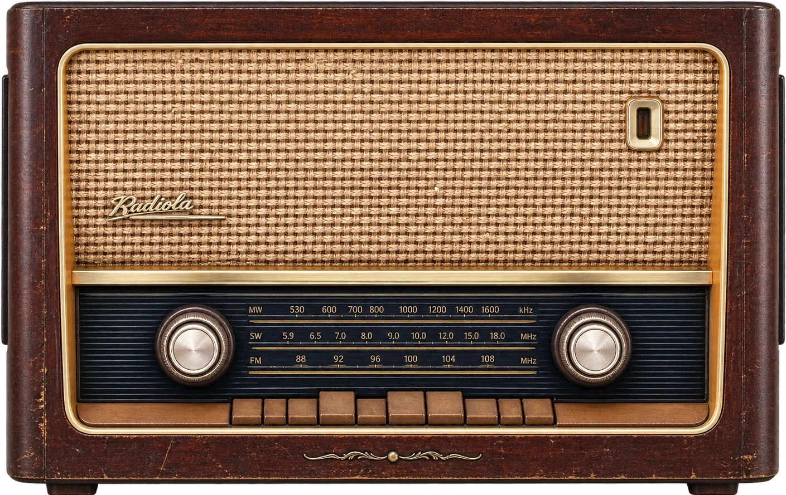

Signal bereit
Deine Favoriten
Hier ist noch Sendepause.
Deine Lieblingssender bekommen hier ihren festen Platz. Entdecke einen Sender und markiere ihn mit dem Herz.
Favoriten und komprimierte Logos bleiben in diesem Browser gespeichert.
Sender entdecken
Bereit zum SuchenNACH BELIEBTHEIT